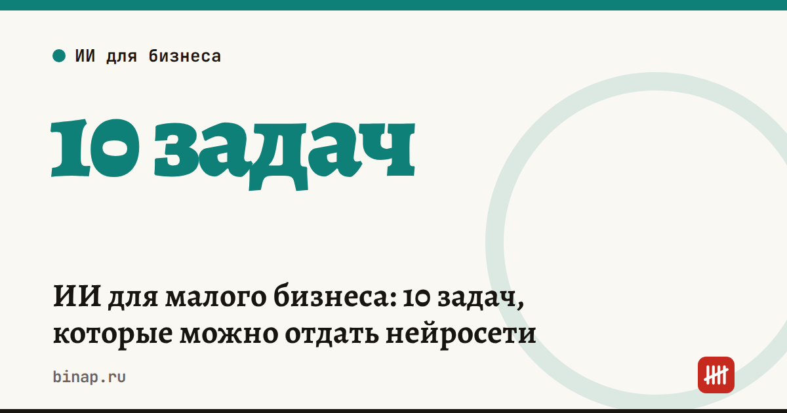

ИИ для малого бизнеса: 10 задач, которые можно отдать нейросети

Нейросеть уже сейчас может взять на себя рутину, на которую у владельца малого бизнеса уходят часы: ответы клиентам, описания товаров, посты, таблицы, черновики писем и договоров. Главное — давать ей чёткую задачу и проверять результат, особенно цифры.
Коротко
- Лучше всего нейросети справляются с текстами, шаблонами, таблицами и разбором длинных документов.
- В России доступны нейросети Сбера (GigaChat) и Яндекса (Алиса), у обеих есть бесплатные версии.
- Не загружайте в нейросеть персональные данные клиентов и коммерческую тайну, если не понимаете, где и как сервис хранит данные.
- Налоговые расчёты, суммы и сроки проверяйте сами: нейросеть ошибается уверенно и без предупреждения.
10 задач с готовыми запросами
Скопируйте запрос, замените текст в квадратных скобках на своё — и отправьте нейросети.
1. Ответы на типовые вопросы клиентов. Шаблоны для мессенджеров и почты: доставка, оплата, возврат, сроки.
Ты — менеджер небольшого магазина [чем торгуете]. Напиши 10 коротких вежливых ответов на частые вопросы клиентов: доставка, оплата, возврат, сроки. Тон — дружелюбный, на «вы», до 300 знаков каждый.
Почему важна скорость первого ответа, мы разбирали в колонке клиентов теряют на первом ответе.
2. Описания товаров для маркетплейсов и сайта.
Напиши описание товара для карточки на маркетплейсе: [название, характеристики]. Структура: 1 абзац о пользе, список из 5 характеристик, блок «Кому подойдёт». До 1000 знаков, без слов «лучший» и «уникальный».
3. Посты для соцсетей на неделю.
Составь контент-план на 5 постов для [VK/Telegram] небольшого бизнеса [ниша]. Для каждого поста: тема, первая строка, 3 тезиса и вопрос к подписчикам.
4. Скрипт продаж и ответы на возражения.
Я продаю [товар/услугу] малому бизнесу. Составь скрипт первого звонка на 2 минуты и ответы на 5 возражений: «дорого», «подумаю», «у нас уже есть поставщик», «пришлите на почту», «нет времени».
Как выстроить работу небольшого отдела продаж — в пяти уроках отдела продаж.
5. Разбор отзывов.
Вот 30 отзывов наших клиентов: [вставить]. Сгруппируй их по темам, посчитай, сколько раз встречается каждая жалоба, и предложи 3 изменения, которые дадут самый большой эффект.
6. Таблицы и формулы.
В Google Таблицах в столбце A — даты продаж, в B — суммы. Напиши формулу, которая считает выручку за каждый месяц, и объясни, куда её вставить.
7. Черновики писем. Претензия поставщику, напоминание об оплате, письмо клиенту о повышении цен.
Напиши вежливое, но твёрдое письмо покупателю о просроченной оплате по договору [номер] на сумму [сумма]. Срок оплаты прошёл [дата]. Предложи оплатить в течение 5 рабочих дней.
8. Поиск рисков в договоре. Нейросеть не заменит юриста, но подсветит пункты, на которые стоит посмотреть внимательнее.
Прочитай договор поставки [вставить текст без персональных данных]. Выпиши пункты, которые невыгодны покупателю: штрафы, сроки, условия расторжения, ответственность. Для каждого — почему это риск.
Перед подписанием договора с новым поставщиком проверьте и его самого — пять бесплатных сервисов в статье как проверить контрагента.
9. Вакансии и собеседования.
Напиши текст вакансии менеджера по продажам для небольшой компании [ниша, город, условия] и 7 вопросов для собеседования, которые покажут, умеет ли кандидат работать с возражениями.
10. Конспект длинного документа.
Перескажи этот документ [вставить текст] для владельца малого бизнеса: что изменилось, кого касается, с какой даты и что сделать. Не больше 7 пунктов.
Даты и цифры из такого пересказа обязательно сверяйте с исходным текстом.
Что не стоит доверять нейросети
- Персональные данные клиентов и сотрудников. ФИО, телефоны, паспортные данные — это персональные данные, их обработку регулирует закон № 152-ФЗ. Убирайте их из текста, прежде чем отправлять его в нейросеть.
- Налоговые расчёты без проверки. Нейросеть может перепутать ставку, срок или лимит. Посчитать налог на УСН надёжнее в нашем калькуляторе УСН, а сроки сверить с налоговым календарём.
- Финальные юридические решения. Черновик договора или претензии — да, подпись без проверки юристом — нет.
- Коммерческую тайну. Цены закупки, базу клиентов, условия с поставщиками не отправляйте в сервисы, правила хранения данных которых вы не читали.
Как начать за 30 минут
- Выберите одну задачу из списка, которая отнимает у вас больше всего времени каждую неделю.
- Попробуйте один и тот же запрос в двух нейросетях и сравните результат.
- Сохраните удачный запрос в заметки — в следующий раз вы потратите на эту задачу минуту.
Частые вопросы
Какая нейросеть лучше для малого бизнеса? Универсального ответа нет. Дайте одну и ту же задачу двум нейросетям и оставьте ту, чей результат требует меньше правок.
Можно ли загружать в нейросеть данные клиентов? Лучше не надо: уберите из текста ФИО, телефоны и другие персональные данные. Их обработку регулирует закон № 152-ФЗ.
Заменит ли нейросеть бухгалтера или юриста? Нет. Она ускоряет черновую работу, но расчёты, сроки и юридически значимые решения нужно проверять.